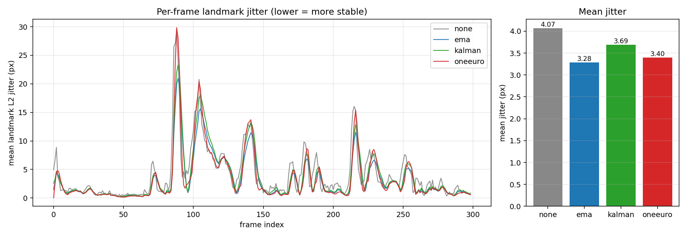
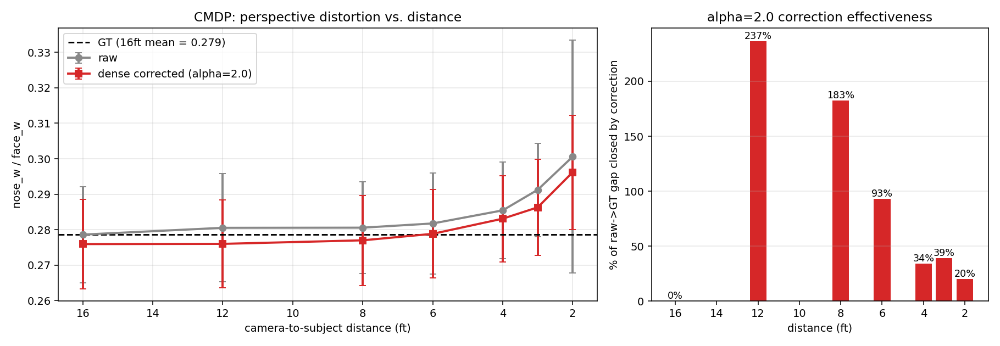

Real-Time Perspective Correction for Selfie Video
CS 131 Final Project Milestone · Daoyuan Chi · May 2026 · Solo
1. Problem and proposal recap
Selfies and webcam video are shot at short camera-to-face distances (typically 30–60 cm), so perspective projection enlarges close-to-camera features (nose, lips, forehead) relative to farther ones (cheeks, ears, jaw). The goal of this project is a real-time pipeline that reduces that distortion and remains temporally stable across video frames. Prior work (Fried 2016, Shih 2019, Zhao 2019, DisCO 2024) targets single still photos; the contribution here is to push correction into a streaming, sub-real-time pipeline with explicit temporal smoothing comparison.
2. Achievements
The full Phase 0–6 pipeline is implemented and runs on a MacBook webcam at ~18–20 FPS with correction enabled. Concretely:
- Phase 0–1: OpenCV capture loop + MediaPipe Face Mesh (478 landmarks, iris refinement enabled). HUD shows live FPS and detection state.
- Phase 2: per-frame distortion metrics computed from named MediaPipe landmark indices — IPD/face_w, nose_w/face_w, nose-chin/face_w, ear-ear/face_h — logged to a per-run CSV and rendered to the HUD.
- Phase 3 (milestone deliverable): four warp modes share the same Delaunay +
cv2.remap infrastructure: a uniform-shrink baseline; depth-weighted radial shrink; a nose-region-only sparse warp; and the project's main contribution, a dense depth-driven perspective re-projection (Sec. 4). All controlled by a single --mode flag plus --strength/--alpha.
- Phase 4: alpha-mask boundary blending. The face-oval polygon is eroded by
feather/2 and Gaussian-blurred (σ=feather/2); the corrected frame is blended back onto the raw image across that band, hiding the face-outline discontinuity.
- Phase 2×3 link (TA milestone feedback):
--auto-strength derives the correction strength per frame from the measured nose-width ratio: strength = clip(1 − target_ratio / current_ratio, 0, max), with target 0.22 (~85 mm portrait reference per Burgos-Artizzu 2014). Correction adapts as the user moves toward/away from the camera.
- Phase 5:
src/process_clip.py records a clip and re-processes it frame-by-frame, producing baseline.mp4 and per-frame CSV/landmark logs.
- Phase 6: three temporal smoothers — EMA, vectorized per-landmark Kalman, and the 1 Euro Filter (Casiez 2012) as a third method — with a shared
update(pts, t) interface.
- Phase 7 (ahead of schedule): real-time optimization. Two CLI knobs (
--depth-downsample, --process-downsample) downsample the smooth-signal stages of the dense warp. 720p warp cost falls 42.7 → 24.1 ms (~42 FPS warp-only, ~34 FPS end-to-end), clearing the 30 FPS target.
- Phase 8 (ahead of schedule): end-to-end evaluation script (
src/eval.py) runs five variants on a recorded clip and reports per-stage latency, FPS, pre/post nose ratio, and frame-to-frame landmark jitter as JSON + two-panel plot.
- Phase 8.5 (ahead of schedule): cross-subject quantitative evaluation on the Caltech Multi-Distance Portraits dataset (Burgos-Artizzu 2014), 51 subjects × 7 distances (Sec. 5).
3. Deviations from the proposal
The proposal scoped Phase 3 as a uniform shrink of central landmarks toward the face center by a constant factor (start with 0.92). When implemented, this visibly puffed the cheeks because the face oval was pinned while interior features compressed uniformly, leaving the cheek/jaw region disproportionately prominent. Three intermediate iterations (depth-weighted radial shrink, full-face symmetric depth re-projection, nose-region-only warp) each fixed one failure mode while introducing another; this lineage is preserved as a single --mode flag for ablation. The final default mode (Sec. 4) is a genuinely different formulation that the proposal did not anticipate: a dense warp built from MediaPipe depth, not a sparse landmark displacement. The proposal's stated metrics, smoothing methods, and evaluation plan are otherwise unchanged.
4. Method: dense depth-driven perspective re-projection
The key observation was that every sparse-landmark warp produces triangle-spanning artifacts (squashed brow, ghosting at the head outline), because the deformation lives only at the 478 landmark vertices and gets piecewise-affine-interpolated across triangles that span depth discontinuities. The new method treats MediaPipe (x, y, z) as a sparse 3D depth signal rather than a set of points to move:
- Delaunay-triangulate over the 478 landmarks plus 8 image-corner anchors.
- For each triangle, solve a 3×3 linear system to get an affine
z(x,y) = ax + by + c, then rasterize z into a dense per-pixel depth map.
- For every output pixel apply the pinhole perspective re-projection
scale(u,v) = α (t + 1) / (t + α)
with t = z(u,v) / d_old, and invert with cv2.remap (source = (output − center) / scale + center).
The control knob α = d_new / d_old is the virtual-camera distance ratio: α=1 is no correction, α=2 is "as if shot from twice as far," large α approaches orthographic projection. Because the depth field is smooth, the resulting warp is smooth too; there are no peripheral artifacts. Cost is comparable to the sparse warp (~44 ms per 720p frame), keeping the pipeline real-time.
5. Intermediate results

Fig. 1. Phase 3 qualitative: raw selfie (left) vs dense correction (right, α=2.0, feather=30). The face is subtly slimmer at the cheeks and the nose retreats; the head outline, hair, and background are untouched thanks to the alpha-mask boundary blend (Phase 4).

Fig. 2. Phase 6 ablation on a 10 s clip (300 frames @ 30 FPS). Mean frame-to-frame landmark L2 jitter: raw 4.07 px → EMA 3.28 (−19%), Kalman 3.69 (−9%), 1 Euro 3.40 (−17%). EMA is strongest on rest-state jitter but laggiest in motion; the 1 Euro Filter trades a fraction of that for better motion responsiveness, matching Casiez 2012's reported lag-jitter trade-off.

Fig. 3. Phase 8.5 (ahead of schedule): cross-subject evaluation on the Caltech Multi-Distance Portraits (Burgos-Artizzu 2014). 51 subjects × 7 distances (2–16 ft), 347 images detected and corrected. Left: raw nose_w/face_w inflates from 0.279 (16 ft, ground truth) to 0.301 (2 ft), confirming the metric encodes perspective distortion across subjects; the dense correction pulls the curve toward the dashed GT line at every distance. Right: fraction of the raw → GT gap closed by the α=2.0 correction: 20% at 2 ft, 39% at 3 ft, 93% at 6 ft. At 8–12 ft the correction overshoots, which directly motivates --auto-strength (Sec. 2): α should scale with measured distortion, not be a constant.
Updated timeline
| Week | Status | Phases |
|---|
| 5/15–5/22 | done | 0, 1, 2, 3 (4 modes), 4 |
| 5/22–5/29 | done early | 5, 6 (3 smoothers), 7, 8, 8.5 |
| 5/29–6/3 | remaining | Zhao 2019 ML comparison mode (CUDA wheels on the NVIDIA workstation), demo slides |
| 6/3–6/6 | remaining | final report (CVPR 4-page) |
Risks: Zhao 2019 expects CUDA; the available NVIDIA GPU makes integration feasible but the released checkpoint may have stale PyTorch/MMCV pins that need a small adaptation pass. Likely budget: half a day. If the comparison frame doesn't fit the 4-page report, it goes into the demo slides instead.
6. What worked, what surprised
The auto-strength bridge between Phase 2 metrics and Phase 3 correction (per TA milestone feedback) makes the pipeline self-calibrating. CMDP confirmed the chosen metric encodes distance: across 51 subjects mean nose_w/face_w rose 7.9% from 16 ft to 2 ft. The biggest surprise was the brittleness of sparse-landmark warps — MediaPipe places landmark 10 (forehead top) far forward in z, so any radial-shrink moved it 50–65 px and distorted the head. The dense reformulation made it go away.
7. Repository & assistance
Code, plots, and per-frame CSV/landmark logs at github.com/Danni281/cs-131-final-project. Headline figures: results/phase6_jitter.png, results/cmdp_eval.png. Default: python src/main.py --correct-on-start --alpha 2.0; every variant exposed via CLI flags for ablation. Phase tracker in README.md. Dev / AI assistance log: CLAUDE.md in the repo root records the running development context and reasoning used during this project; all design decisions, debugging, and writing were collaborated on with Claude.